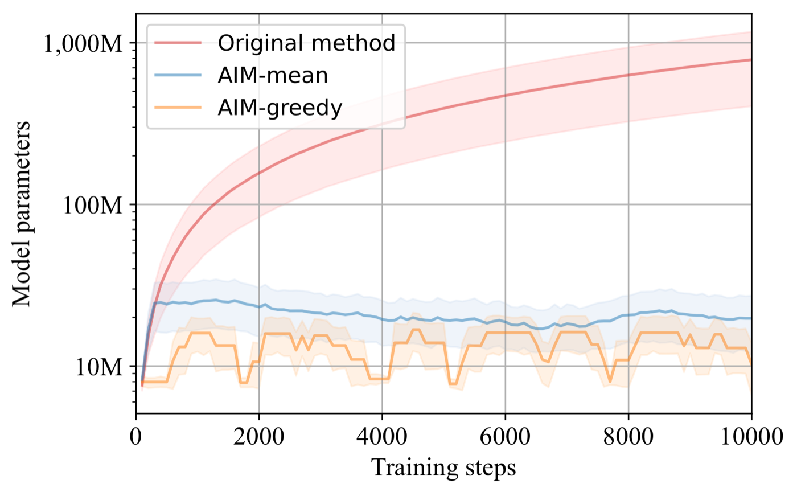
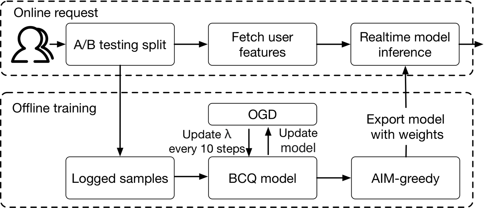

- 1 日 32% → 7 日 82%クーポンを 1 元から 3 元に増やしたときの DAU の増分が、非アクティブ層では活発な層より何割大きいか。見る期間を延ばすほど差が開いた（Table 1）。
- 高々 \(m+2\) 個制約が \(m\) 本のとき、AIM 方策が保存する方策の数。元の混合方策の方法では学習のステップ数に比例して増える。
- 週平均 DAU +0.6%1 週間のオンライン A/B テストで、DIN と線形計画による配分と比べた結果。クーポン費用は 0.8% 減った。
クーポンの効果は数日かけて表れ、翌日の反応だけでは非アクティブな利用者への効果を小さく見積もる
題材は Alipay が 2020 年第 4 四半期から 2021 年第 2 四半期にかけて行った決済アプリの販促キャンペーンである。利用者はアプリで支払うと 1 日 1 枚の現金クーポンを使え、翌日分のクーポンを受け取る。参加者は数千万人、配って使われたクーポンは 10 億元を超える。成果はアプリで決済した利用者の週平均 DAU で測る。
従来の方法は 2 段階で配る。まず応答モデルでクーポン額ごとの翌日の利用率などの短期の反応を予測し、次に予算の制約のもとで最適化問題を解いて配分を決める。この枠組みは大規模でも動くが、何度か使ううちに新しい支払いの習慣がつくといった長期の効果は、翌日の反応だけを見る応答モデルでは捉えられない。
論文はランダムに配ったデータでこれを確かめている。クーポンを 1 元から 3 元に増やしたときの DAU の増分は、過去の DAU で分けた非アクティブ層のほうが大きく、その差は 1 日で見ると 32% だが、7 日で見ると 82% に広がった（Table 1）。短期の指標だけを見ると、非アクティブ層に予算を多く回す価値を大きく過小評価する可能性が高い。
- 1 日：非アクティブ層 +0.15、活発な層 +0.11（論文の差 32%）
- 3 日：+0.54、+0.31（72%）
- 7 日：+1.24、+0.68（82%）
表の値（小数 2 桁に丸めた値）から計算すると、差は 1 日で約 36%、3 日で約 74% になるが、論文の表では 32%、72% となっている。
予算配分を、累積コストの期待値に上限を置いた制約付きマルコフ決定過程として学ぶ
論文は問題を制約付きマルコフ決定過程（CMDP）として書く。各時点で状態 \(s_t\) を見て行動 \(a_t\)（クーポン額）を選ぶと、報酬 \(r_t\) と、予算の消費を表す \(m\) 次元のコスト \(\mathbf{c}_t\) が生じる。割引率 \(\gamma\) のもとでの期待累積報酬を \(J_r\)、期待累積コストを \(J_{\mathbf{c}}\) とし、この 2 つを並べた \(m+1\) 次元の測定ベクトル \(\mathbf{x}(\pi) = [J_r(\pi), J_{\mathbf{c}}(\pi)]\) で方策を比べる。
学習に使えるのは、過去の方策で集めた遷移のデータ \(D\) だけである（オフライン）。ここで \(\Delta(\Pi)\) は決定的な方策の上の確率分布、つまり混合方策で、エピソードの初めに方策を 1 つ抽選し、そのエピソードの間はそれに従う。制約がなければ決定的な方策で最適にできるが、制約があると最適な方策が決定的とは限らない。論文の例では、報酬 0・コスト 0 の行動と報酬 1・コスト 1 の行動があり、コストの上限が \(\tau \in (0,1)\) なら、後者を確率 \(\tau\) で選ぶのが最適になる。
この問題はラグランジュ乗数 \(\boldsymbol\lambda \ge 0\) を入れて、方策 \(\mu\) と乗数 \(\boldsymbol\lambda\) の二人ゼロ和ゲームの均衡を求める問題に書き換えられる。
\(\boldsymbol\lambda\) を固定すれば、報酬を \(r - \boldsymbol\lambda^{\top}(\mathbf{c} - \boldsymbol\tau)\) に置き換えた制約なしの強化学習になり、Q 学習などのオフラインの手法でそのまま解ける。
混合方策による解き方は最適な方策に収束するが、学習した方策をすべて保存する必要がある
元の混合方策の方法（論文 Algorithm 1）では、乗数 \(\boldsymbol\lambda_t\) をオンライン勾配降下法（OGD）で更新し、そのつど \(\boldsymbol\lambda_t\) に対する最良応答の方策 \(\pi_t\) を強化学習で求める。出力は \(\pi_1, \dots, \pi_T\) を等確率で選ぶ混合方策で、双対ギャップは \(\boldsymbol\lambda\) 側の後悔を \(T\) で割った値 \(\mathrm{Regret}_T / T\) 以下に収まる（命題 1）。
乗数の平均はベクトル 1 本で保持できるが、方策の平均はそうはいかない。各方策は大規模なニューラルネットワークで、パラメータを平均しても方策の混合にはならないからである。そのため、学習した方策をすべて保存しなければならず、必要なメモリは学習のステップ数に比例して増える。論文は、産業規模のマーケティングではこれが実装の妨げになると述べる。
AIM 方策は、測定ベクトルがアフィン独立な高々 m+2 個の方策を混ぜて、同じ平均を再現する
混合方策の測定ベクトルは混ぜた方策の測定ベクトルの凸結合である。そこで論文は、混ぜる方策の測定ベクトルが互いにアフィン独立になるように保つ AIM（Affinely Independent Mixed）方策を提案する。測定ベクトルは \(m+1\) 次元なので、アフィン独立な点は高々 \(m+2\) 個しか取れない。目標の点がそれらの作る単体の中にあれば、重心座標を混合の確率に使うことで同じ測定ベクトルが得られる。
AIM-mean（Algorithm 2）は、元の方法と同じ「これまでの方策の平均」を目標にする。新しい方策 \(\pi_t\) が来たら目標 \(\mathbf{x}_t\) を更新し、(i) \(\mathbf{x}_t\) が今の頂点のアフィン包の外なら \(\pi_t\) を頂点に加え、(ii) 単体の中なら頂点はそのままで重みだけを計算し直し、(iii) アフィン包の中だが単体の外なら、前の目標から新しい目標への線分が横切る面を探し、その面にない頂点を 1 つ外して \(\pi_t\) を入れる。測定ベクトルは元の方法とまったく同じなので、同じように最適な方策に収束する（系 1）。
AIM-greedy（Algorithm 3）は、目標を平均にせず、前の目標と新しい方策を結ぶ線分の上で、制約を満たす範囲で報酬が最大になる点を選ぶ。両方が制約を満たすなら報酬の高いほう、どちらも満たさないなら制約までの距離が近いほう、片方だけ満たして満たさないほうの報酬が高いなら制約の境界上の点を選ぶ。収束の保証はないが、学習した方策のうち最もよい 1 つを選ぶ既存の工夫（single-best）より悪くならないことを示している（定理 1）。
さらに論文は、制約が \(m\) 本のとき、収束を保証するには少なくとも \(m+1\) 個の決定的な方策を混ぜる必要があることを示す（定理 2）。AIM の上限 \(m+2\) はこの下限に近く、要旨ではこれを「ほぼ最適」な方策の効率としている。
ランダムに配った 420 万件のログで学習し、即時の予算をそろえてオフラインで比べた
データは 2020 年 12 月の 1 週間に、一部の利用者に対して利用者単位でランダムにクーポン額を割り当てて集めた 420 万件である。平均のクーポン額は約 2.5 元で、ランダムな方策は最適でない可能性が高く、このデータの収集には実際に費用がかかっていると論文は述べる。各サンプルには年齢、性別、都市、行動の履歴など約 1,000 個の特徴量があり、ラベルは次の 1・3・7 日間の DAU である。全データ（約 56 GB）のほか、前日に参加したかどうかと活発さの水準の 2 特徴量だけの簡易版も作った。
比べたのは、短期の指標（1 日の DAU）を最適化する従来の 2 段階の方法（DeepFM と DIN）と、3 種類の強化学習（DDQN、EDRR、BCQ）それぞれで single-best・AIM-mean・AIM-greedy を使った方策である。公平に比べるため、どの方法も Q 値などを応答の予測とみなして線形計画で配分し、即時の予算を 3 元にそろえた。評価は重みを 20 で切り詰めた重点サンプリングによるオフラインの方策評価で、5 回の平均である。割引率は 0.8、学習とテストは利用者 ID のハッシュで 9 対 1 に分けた。
以下の数値は arXiv v1（2023 年 9 月 6 日）の本文と表による。WSDM 掲載版（ACM）の本文は照合していない。
翌日の利用率では従来の方法が高いが、3 日と 7 日の DAU ではすべての強化学習の方策が上回った
全データで 1 日の DAU（クーポンの利用率）が最も高いのは DIN（0.6468）で、強化学習の方策で最も高い BCQ の AIM-greedy は 0.6205 だった。一方、7 日の DAU では DIN の 5.2237 に対し、BCQ の AIM-greedy が 5.7020 と最も高い。3 日と 7 日の DAU では簡易版・全データのどちらでも、強化学習の 9 つの方策がすべて従来の 2 つを上回った。
強化学習の中では、AIM-greedy が 3 種類の手法と 6 つの指標の 18 通りすべてで single-best を上回った。AIM-mean は 18 通りのうち 17 通りで single-best より低い。論文は、AIM-mean の測定ベクトルは元の混合方策と同じなので、性能も元の方法と同じだと述べている。

オンラインの A/B テストでは、翌日の利用率は下がったが週平均の DAU が 0.6% 上がり、クーポン費用は 0.8% 減った
本番では BCQ で学習し、乗数 \(\lambda\) を OGD で更新し、AIM-greedy で混合方策に加える方策を選ぶ。選ばれたモデルは重みとともに書き出され、オンラインの推論サーバーに読み込まれる。比較相手は DIN と線形計画による従来の配分で、利用者単位でランダムに分け、少ない流量から始めて徐々に増やした。
実験は 1 週間で、それぞれのモデルが 550 万枚のクーポンを配った。強化学習の方策は翌日のクーポン利用率では DIN を下回ったが、アプリの週平均 DAU を 0.6% 高め、クーポン費用を 0.8% 減らした。論文の事後分析によると、長期の価値を重視したため非アクティブな利用者に多くの予算が回り、その利用者の定着が増えたことで、活発な利用者で短期の指標が下がった分を補ったという。この方策はその後、キャンペーンの全流量に展開された。

予算は累積コストの期待値への制約としてラグランジュ乗数で扱い、処置効果は直接は推定しない
この論文が学ぶのは、利用者の状態ごとに、クーポン額を選んだときの長期の価値（報酬からラグランジュ乗数で罰したコストを引いたものの割引累積）を表す Q 関数である。アップリフトや CATE を明示的には推定しないが、学習データは利用者単位でランダムに額を割り当てたログである。論文は報酬を DAU、コストをクーポンによる予算の消費として説明しているが、実験での報酬とコストの式は明示していない（解説者の注）。
処置は多値（クーポン額）で、毎日繰り返し配る逐次の決定として扱う。予算の制約は方策の期待累積コストに上限 \(\boldsymbol\tau\) を置く形で、総額の上限を確実に守る制約ではない。乗数 \(\boldsymbol\lambda\) を OGD で調整し、混合方策で期待値として制約を満たす。実験の比較では別途、線形計画で即時の予算を 3 元にそろえている。
\(\boldsymbol\lambda\) を固定したときの最良応答は、利用者ごとに「報酬 − \(\boldsymbol\lambda\) × コスト」が最大の額を選ぶことで、ナップザック問題（各利用者から額を 1 つ選ぶ多肢選択型）のラグランジュ緩和と同じ形をしている。配るか配らないかの二択なら、これは「増分の価値 ÷ 増分のコスト」が \(\lambda\) を超える人に配ることに当たり、ROI 順の割当てで比のしきい値を \(\lambda\) にしたものになる。論文の例 1 で、二つの行動を確率 \(\tau\) で混ぜるのが最適になるのも、連続緩和で境目の 1 品だけを分割して入れるのと同じ構造である（解説者の注）。違いは、価値とコストが翌日の反応ではなく割引累積の期待値で測られている点にある。
@inproceedings{cai2023marketing,
title = {Marketing Budget Allocation with Offline Constrained Deep Reinforcement Learning},
author = {Cai, Tianchi and Jiang, Jiyan and Zhang, Wenpeng and Zhou, Shiji and Song, Xierui and Yu, Li and Gu, Lihong and Zeng, Xiaodong and Gu, Jinjie and Zhang, Guannan},
booktitle = {Proceedings of the Sixteenth ACM International Conference on Web Search and Data Mining},
pages = {186--194},
year = {2023},
publisher = {ACM},
doi = {10.1145/3539597.3570486}
}